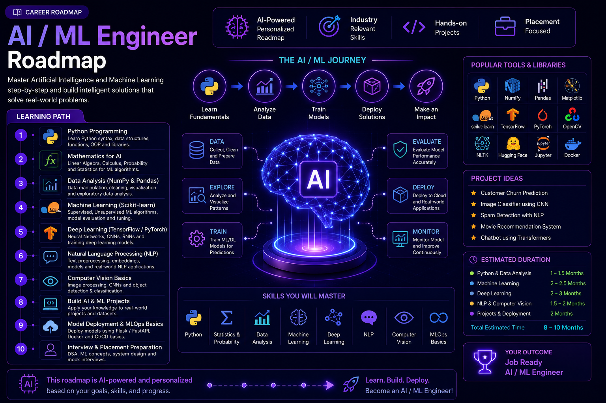
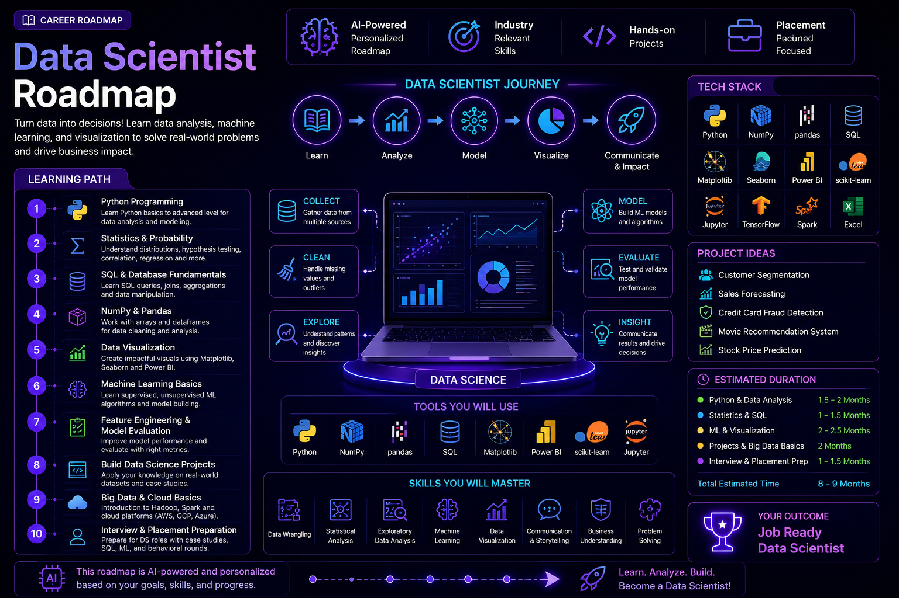
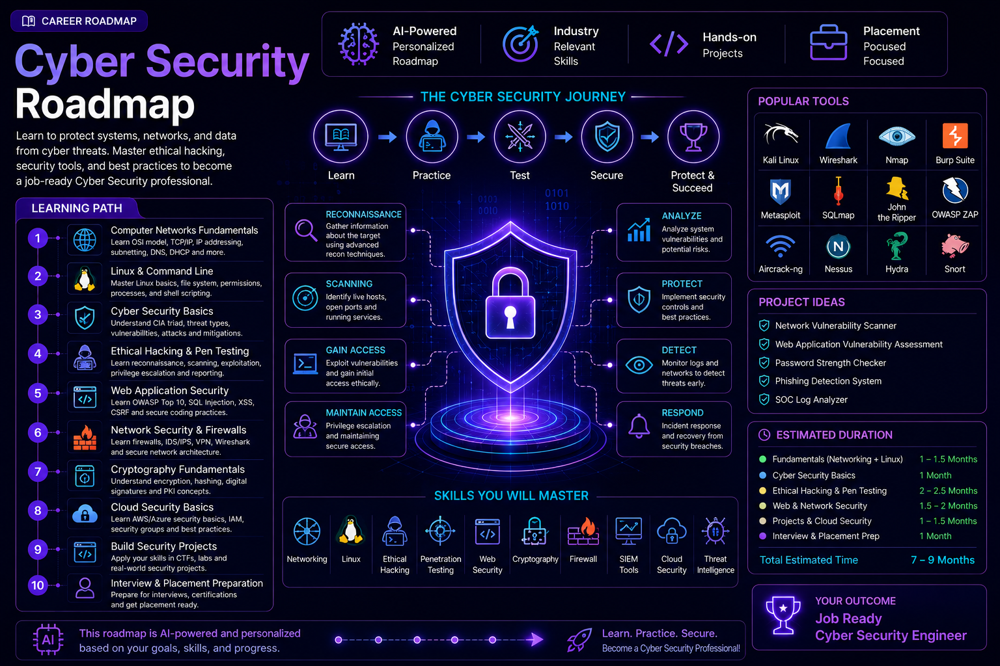
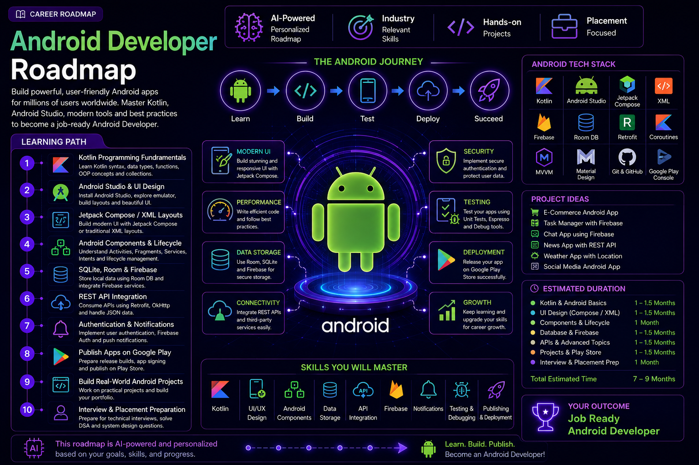
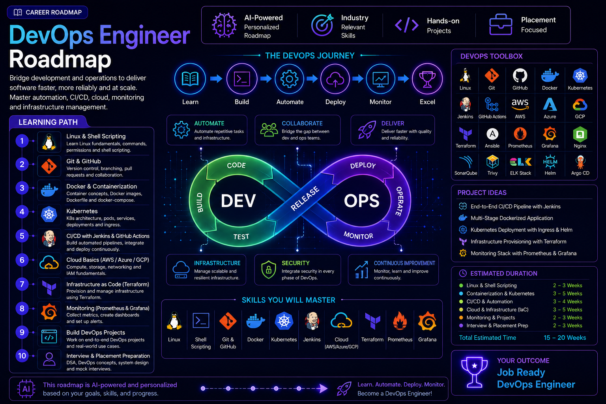
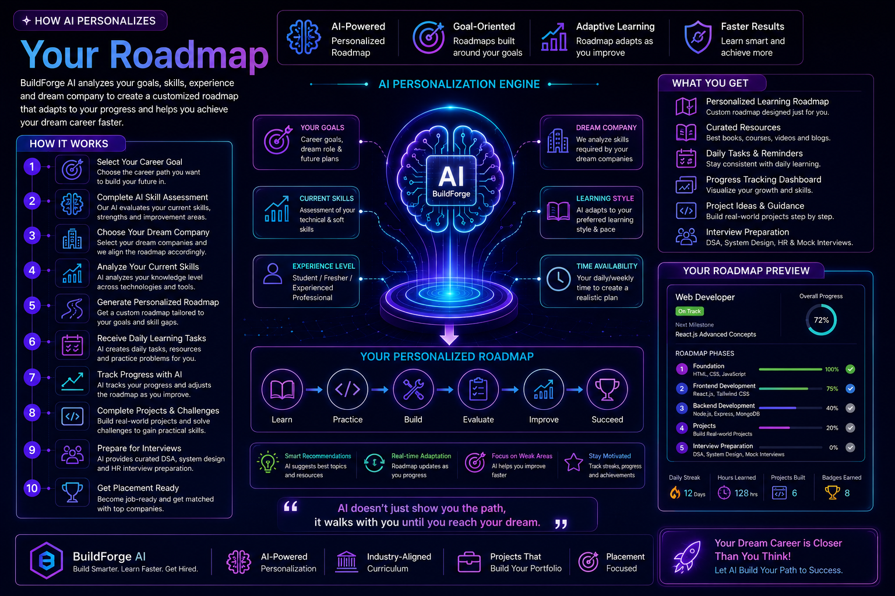
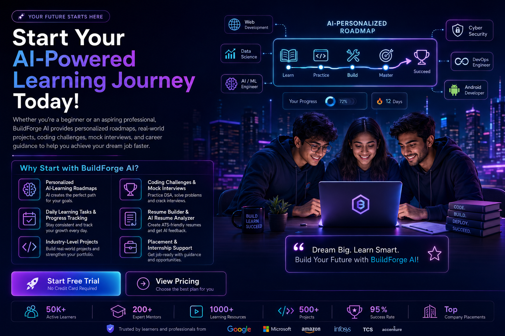

Explore AI-powered career roadmaps designed to help
students become industry-ready professionals.
Select your dream career and follow a personalized
step-by-step learning journey.
Discover personalized AI roadmaps that guide you
from beginner to professional.
Choose Your Career Path
Select your desired career path and let BuildForge AI
create a personalized roadmap based on your goals,
skills, and experience level.
Available Career Roadmaps
Software Engineer
Frontend Developer
Backend Developer
Full Stack Developer
Java Developer
AI / Machine Learning Engineer
Data Scientist
Cyber Security Engineer
Android Developer
DevOps Engineer
Explore multiple technology career paths and choose
the roadmap that matches your dream career.
Software Engineer Roadmap
Become a professional Software Engineer by following
a structured AI-powered roadmap that covers programming,
problem-solving, software development, and interview preparation.
Learning Path
Programming Fundamentals (C++ / Java / Python)
Data Structures & Algorithms
Object-Oriented Programming
Database Management System (DBMS)
Operating System & Computer Networks
Git & GitHub
System Design Basics
Build Real-World Projects
Resume Preparation
Mock Interviews & Placement Preparation
A complete step-by-step roadmap to become a
successful Software Engineer.
Frontend Developer Roadmap
Master modern web development by learning how to build
beautiful, responsive, and interactive user interfaces
using today's most popular frontend technologies.
Learning Path
HTML5 Fundamentals
CSS3 & Responsive Design
JavaScript (ES6+)
Version Control with Git & GitHub
React.js
State Management
REST APIs Integration
Frontend Projects
Portfolio Development
Interview & Placement Preparation
Follow a structured roadmap to become a professional
Frontend Developer.
Backend Developer Roadmap
Learn to build powerful, secure, and scalable server-side
applications by mastering backend technologies, databases,
APIs, authentication, and cloud deployment.
Learning Path
Programming with Java / Python / Node.js
Object-Oriented Programming
Database Management (SQL & NoSQL)
REST API Development
Authentication & Authorization
Spring Boot / Express.js / Django
Git & GitHub
Cloud Deployment Basics
Backend Projects
Interview & Placement Preparation
Master backend development with a structured
AI-powered learning roadmap.
Full Stack Developer Roadmap
Become a complete Full Stack Developer by mastering
both frontend and backend technologies, databases,
cloud deployment, and modern development workflows.
Learning Path
HTML5 & CSS3
JavaScript (ES6+)
React.js
Backend Development (Node.js / Spring Boot)
Database Management (SQL & MongoDB)
REST APIs & Authentication
Git & GitHub
Cloud Deployment
Build Full Stack Projects
Interview & Placement Preparation
Learn frontend and backend development with one
complete AI-powered Full Stack roadmap.
Java Developer Roadmap
Become a professional Java Developer by mastering
Java programming, object-oriented concepts,
backend frameworks, databases, and enterprise
application development.
Learning Path
Java Fundamentals
Object-Oriented Programming (OOP)
Exception Handling & Collections
Multithreading & File Handling
JDBC & MySQL
Spring Boot Framework
REST API Development
Git & GitHub
Build Java Projects
Interview & Placement Preparation
Follow a structured AI-powered roadmap to become
a job-ready Java Developer.
AI / Machine Learning Engineer Roadmap
Build intelligent applications by mastering Artificial
Intelligence, Machine Learning, Deep Learning, and data-driven
technologies used by leading companies around the world.
Learning Path
Python Programming
Mathematics for AI (Linear Algebra, Probability & Statistics)
Data Analysis with NumPy & Pandas
Machine Learning with Scikit-learn
Deep Learning with TensorFlow / PyTorch
Natural Language Processing (NLP)
Computer Vision Basics
Build AI & ML Projects
Model Deployment & MLOps Basics
Interview & Placement Preparation

Learn Artificial Intelligence and Machine Learning
through a structured AI-powered roadmap.
Data Scientist Roadmap
Become a Data Scientist by learning data analysis,
statistics, machine learning, data visualization,
and predictive modeling to solve real-world business
problems using data.
Learning Path
Python Programming
Statistics & Probability
SQL & Database Fundamentals
NumPy & Pandas
Data Visualization (Matplotlib & Power BI)
Machine Learning Basics
Feature Engineering & Model Evaluation
Build Data Science Projects
Big Data & Cloud Basics
Interview & Placement Preparation

Learn data science with an AI-powered roadmap
from beginner to industry-ready professional.
Cyber Security Roadmap
Protect digital systems and networks by mastering
ethical hacking, network security, penetration testing,
cloud security, and incident response with an
AI-powered learning roadmap.
Learning Path
Computer Networks Fundamentals
Linux & Command Line
Cyber Security Basics
Ethical Hacking & Penetration Testing
Web Application Security
Network Security & Firewalls
Cryptography Fundamentals
Cloud Security Basics
Build Security Projects
Interview & Placement Preparation

Become a Cyber Security professional with a
structured AI-powered roadmap.
Android Developer Roadmap
Build modern Android applications by mastering Kotlin,
Android Studio, Jetpack libraries, Firebase, APIs,
and real-world mobile app development.
Learning Path
Kotlin Programming Fundamentals
Android Studio & UI Design
Jetpack Compose / XML Layouts
Android Components & Lifecycle
SQLite, Room & Firebase
REST API Integration
Authentication & Notifications
Publish Apps on Google Play
Build Real-World Android Projects
Interview & Placement Preparation

Become a professional Android Developer with an
AI-powered step-by-step learning roadmap.
DevOps Engineer Roadmap
Master DevOps practices by learning automation,
containerization, cloud computing, CI/CD pipelines,
monitoring, and infrastructure management to build
scalable and reliable software delivery systems.
Learning Path
Linux & Shell Scripting
Git & GitHub
Docker & Containerization
Kubernetes
CI/CD with Jenkins & GitHub Actions
AWS / Azure / Google Cloud Basics
Infrastructure as Code (Terraform)
Monitoring with Prometheus & Grafana
Build DevOps Projects
Interview & Placement Preparation

Learn modern DevOps tools and practices with an
AI-powered roadmap from beginner to professional.
How AI Personalizes Your Roadmap
BuildForge AI creates a personalized learning roadmap
based on your goals, current skills, experience level,
and dream company to help you learn smarter and faster.
How It Works
Select Your Career Goal
Complete AI Skill Assessment
Choose Your Dream Company
Analyze Your Current Skills
Generate Personalized Roadmap
Receive Daily Learning Tasks
Track Progress with AI
Complete Projects & Challenges
Prepare for Interviews
Get Placement Ready

Our AI creates a customized roadmap that adapts
to your learning progress and career goals.
Start Your AI-Powered Learning Journey Today
Whether you're a beginner or an aspiring professional,
BuildForge AI provides personalized roadmaps, real-world
projects, coding challenges, mock interviews, and career
guidance to help you achieve your dream job faster.
Why Start with BuildForge AI?
Personalized AI Learning Roadmaps
Daily Learning Tasks & Progress Tracking
Industry-Level Projects
Coding Challenges & Mock Interviews
Resume Builder & AI Resume Analyzer
Placement & Internship Support

Build your future with AI-powered career roadmaps
and become job-ready with BuildForge AI.